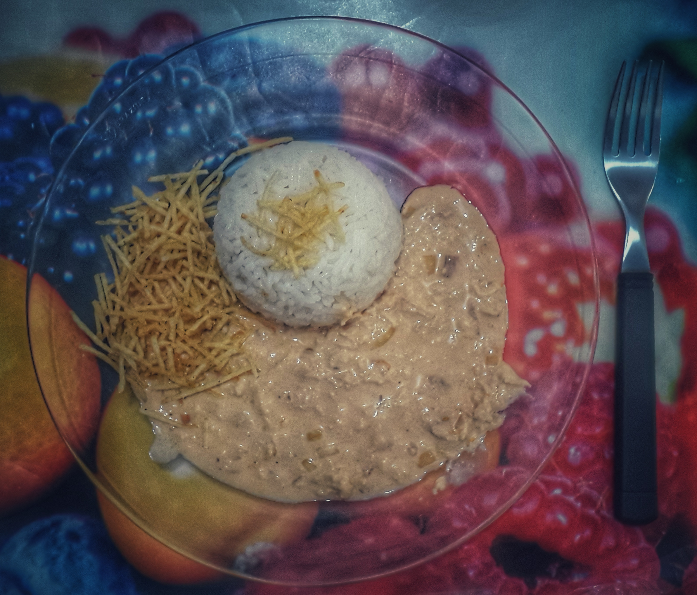

BEM VINDO(A) AO CARDÁPIO DO DIA, COM O CHEFF CHRYSTOPHER!
CONHEÇA UM POUCO DA TRAJETÓRIA DO CHEFF:
Nascido em agosto de 1995, a paixão por culinária deu-se já de imediato,
acredita-se que seja pelo fato de sua mãe cozinhar enquanto cuidava do próprio.
Chrystopher especializou-se em Preparação de Lanches na "Stanford University", da Califórnia,
logo então decidiu fazer seu doutorado em Culinária Avançada II, na França, na "Sorbonne Université", no ano de 2015.
Em Paris, começou trabalhando com Jhalim Rabei, no Restaurante Chardenoux e, em seguida, com Si Masthurbo.
Depois com Tchupei Pal - "Maître Cuisinier de France" e, também, no Restaurante "Deide Coatro", todos restaurantes estrelados.
Hoje em dia, já aposentado, cozinha para a família em casa.
Confira o refinado prato que o CHEFF CHRYSTOPHER preparou em seu lar para o almoço de hoje:

STROGONOFF DE FRANGO COM ARROZ BRANCO E BATATA PALHA